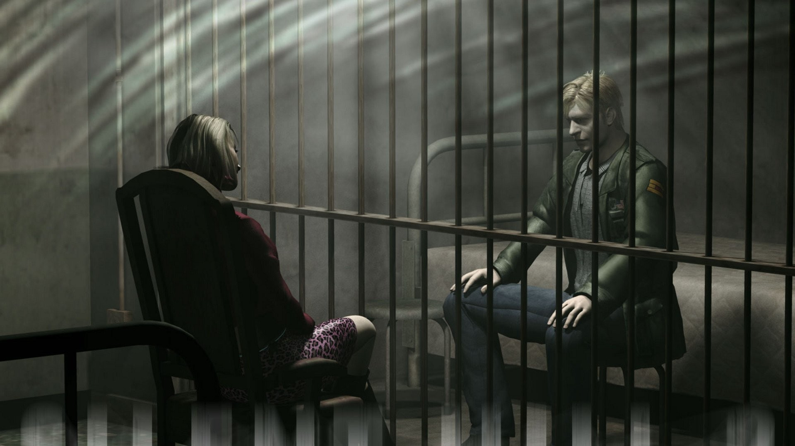
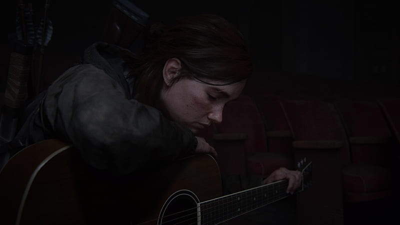
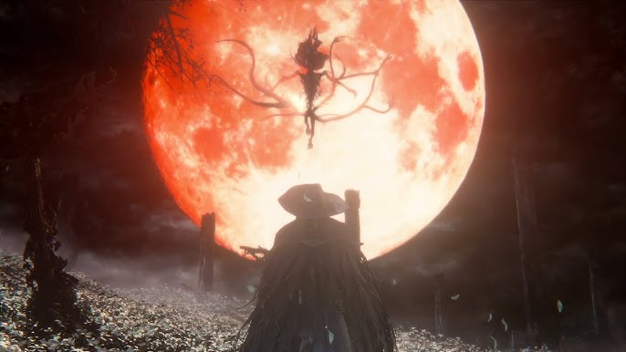
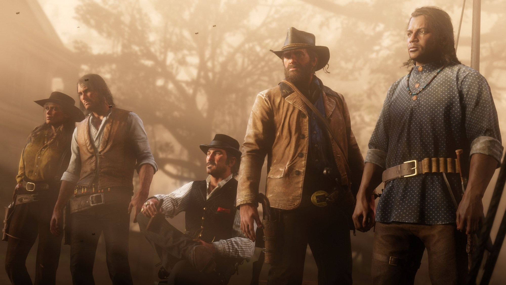
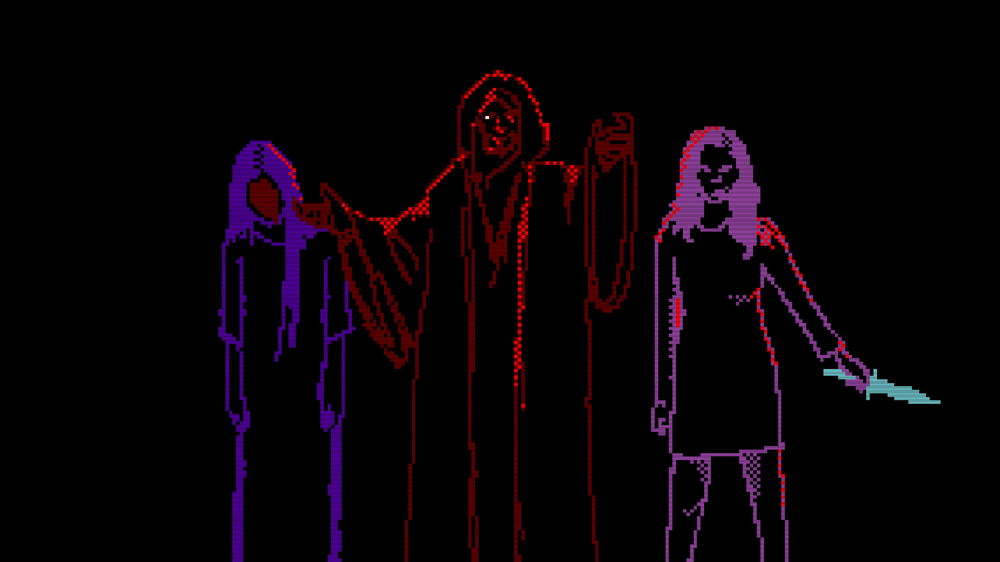

Top 5 Jogos
Os jogos sempre foram uma grande paixão minha. O modo como alguns deles nos conseguem imergir em universos ricos, cheios de detalhes e histórias emocionantes é algo que me fascina. A experiência de jogar não é apenas sobre os desafios, mas também sobre as emoções e os mundos que eles criam. Nesta secção, apresentarei alguns dos meus jogos favoritos, sem uma ordem específica, junto com um pequeno comentário sobre o que torna cada um deles tão especial para mim.
Silent Hill 2
Lançado em 2001 para a PS2 após o sucesso do seu antecessor, Silent Hill 2 coloca-nos na pele de James Sunderland, um homem comum que, após receber uma carta da sua falecida esposa, decide ir para Silent Hill, em busca do "Lugar especial" deles que a mesma havia mencionado na carta. O jogo presenteia-nos com uma narrativa brilhante e rica em detalhe, onde tudo tem um simbolismo ou siginificado e uma trilha sonora atmosférica, fazendo tudo parecer um sonho enquanto acompanhamos uma viagem não só pela cidade, mas pela mente obscura e perturbada de um homem que já não tem nada a perder, tornando-o num incrível clássico do Terror Psicológico.
The Last of Us 2
The Last of Us 2 sai em plena pandemia durante 2020 e presenteia-nos com gráficos incrivéis e uma narrativa marcante que desperta quase todas as emoções que um ser humano pode sentir. Diferente do primeiro jogo onde jogamos com Joel, desta vez temos duas personagens principais de lados totalmente opostos como personagens jogáveis, Ellie e Abby. A meu ver, o que torna este jogo incrível é a forma como o ele nos apresenta naturalmente as diferentes prespectivas dos grupos que lutam entre si pela sobrevivência num duro mundo pós-apócaliptico, fazendo eventualmente com que o jogador se sinta apegado a personagens que outrora odiara e vice-versa. The Last Of Us 2 é um jogo com momentos marcantes e emotivos, uma incrível história de vingança e redenção.
Bloodborne
Uma obra-prima do gênero Soulslike. O clima gótico e desafiador de Bloodborne cria uma experiência única, com uma jogabilidade que recompensa a paciência e a estratégia. Lançado em 2015, Bloodborne passa-se na cidade de Yharnam, uma cidade aparentemente infetada com uma doença que transforma os seus habitantes em criaturas monstruosas. No entanto, a história de Bloodborne vai muito mais fundo, inspirando-se fortemente no terror cósmico de Lovecraft e em temas como fanatismo religioso, loucura e a busca pelo conhecimento proíbido que levaria ascenção da humanidade. A dificuldade elevada do jogo pode fazer o jogador sentir-se tentado a desistir, mas isso torna cada vitória extremamente saborosa e recompensadora, uma metáfora para aquilo que o próprio personagem sente durante a sua jornada pela cidade.
Red Dead Redemption 2
Um dos maiores jogos de mundo aberto já feitos. A imersão no Velho Oeste e a profundidade dos seus personagens tornam este jogo inesquecível. Lançado em 2018, Red Dead Redemption 2 acompanha Arthur Morgan e o fim da gangue onde ele está inserido. Red Dead Redemption foca-se muito na moralidade das ações do jogador, bem como em temas como a lealdade e a redenção. O vasto mundo aberto é rico em detalhes, com paisagens deslumbrantes, vida selvagem realista e inúmeras interações dinâmicas, tornando-o numa experiência incrivelmente marcante e natural.
Faith
Faith é um jogo de 2017 desenvolvido pela Airdorf Games. O jogo incorpora uma estética Retro inspirada em sistemas dos anos 80 e coloca-nos na pele de John Ward, um padre que retorna a uma casa rural para enfrentar uma entidade demoníaca após um exorcismo mal sucedido. Com gráficos minimalistas em estilo pixel art e uma trilha sonora atmosférica que mistura sons eletrônicos e falas sintetizadas, o jogo cria um ambiente profundamente inquietante. A narrativa aborda temas como fé, culpa e sacrifício, revelados através de documentos, cutscenes e simbolismos. Faith é amplamente elogiado pela sua habilidade em criar terror psicológico e tensão com recursos simples, destacando-se como uma experiência única no gênero de terror independente.